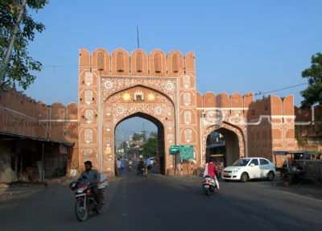

Suraj Pol Gate
TEST_ONLY_REAL · local demo · reusable license unverified
Offline card thumbnail

Offline place detail
Source: JaipurThruMyLens
Strict verified media: UNRESOLVED. Test-only photographs do not contribute to production coverage.